Dissenyar per a la talladora làser amb Inkscape
Aprèn a dibuixar peces que la màquina sap llegir: què es talla, què es grava i què només es marca, i com preparar el fitxer perquè surti bé a la primera.
Abans de començar, obre la i tria el programa de la vostra talladora i els colors del taller. Tot el tutorial s'adapta a aquesta tria.
Com està organitzat
- Els apartats marcats amb ESO són la base que tothom ha de saber.
- Els marcats amb Batxillerat aprofundeixen (encaixos, kerf, mosaics...). Es poden amagar des de la Configuració.
- Els requadres amb vora verda canvien segons el programa de la talladora que hagis triat.
- Els menús d'Inkscape s'escriuen així: , i les tecles així: Maj+Ctrl+C.
- Les captures de pantalla fan servir els colors per defecte (tall negre, gravat vermell, marcat blau).
Com llegeix el fitxer la talladora
La talladora làser no "veu" el dibuix com nosaltres. Rep una llista de línies i formes (un fitxer vectorial, com l'SVG) i, per a cada una, mira el color o la capa per saber què ha de fer. Per això el dibuix ha de ser molt ordenat.
Vectorial i mapa de bits
Vectorial (SVG, DXF, PDF)
Formes descrites amb punts i corbes. Es poden ampliar sense perdre qualitat. És el que fem servir per tallar.
Mapa de bits (PNG, JPG)
Una quadrícula de píxels, com una foto. Només serveix per gravar imatges; no es pot tallar.
Les tres operacions
Tallar
El làser travessa tot el material, a poca velocitat i molta potència. La peça se separa.
Gravar
El làser escombra la superfície línia a línia (com una impressora) i crema una mica la fusta. Omple àrees.
Marcar
Com tallar però amb poca potència: segueix la línia i només en deixa el rastre. Ideal per a línies fines i plecs.
La regla d'or: a la talladora, el que importa és el color i si la forma té traç o emplenat. El gruix de la línia, a la majoria de programes, no canvia el gruix del tall: el làser sempre fa el mateix tall fi (unes dècimes de mil·límetre).
Per què dues (o tres) capes?
Separem el dibuix en capes d'Inkscape amb el nom de cada operació. Així pots amagar, bloquejar o seleccionar tot el que es talla d'un sol cop, i et costa més equivocar-te de color. L'ordre també importa: primer es grava i es marca, i al final es talla. Si tallessis primer, la peça podria moure's o caure i el gravat sortiria desplaçat.
Preparar Inkscape
Posar Inkscape en català
- Obre (o Maj+Ctrl+P).
- Ves a Interface i, a Language, tria Catalan (ca).
- Tanca i torna a obrir Inkscape.
Mida de la pàgina = àrea de treball
Fes que la pàgina tingui la mida de la planxa de fusta (o de l'àrea de la talladora). Així veus de seguida si la peça hi cap.
- Obre (Maj+Ctrl+D).
- A Format, posa les unitats en mm.
- Escriu l'Amplada i l'Alçada de la planxa. Comprova que Escala sigui
1,000000(1 mm per unitat d'usuari). - A la barra de dalt, posa també les unitats de les caselles X, Y, A, H en mm.
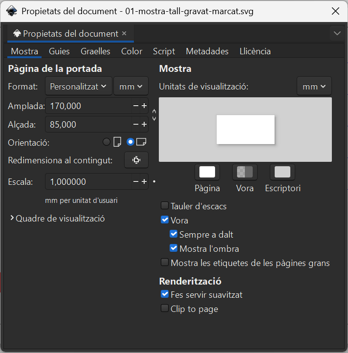
Drecera: fes servir la plantilla d'aquest tutorial. Ja té les capes creades, els colors correctes i les unitats en mm. Només cal canviar la mida de pàgina.
La interfície
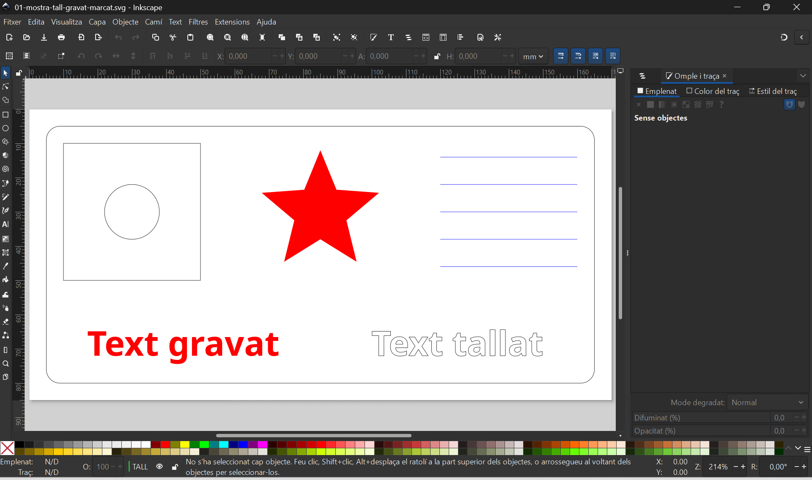
| Zona | On és | Per a què serveix |
|---|---|---|
| Barra de menús | A dalt de tot | Totes les ordres: , , , , ... |
| Barra de controls de l'eina | Sota els menús | Canvia segons l'eina. Amb el seleccionador mostra X, Y, A (amplada), H (alçada): aquí escrius mides exactes. |
| Caixa d'eines | Columna esquerra | Seleccionar, dibuixar formes, text, nodes... |
| Llenç i pàgina | Al centre | On dibuixes. La pàgina blanca representa la planxa. |
| Panells (diàlegs) | Columna dreta | Capes i objectes, Emplenat i traç, Alinea i distribueix... |
| Paleta de colors | A baix | Clic = color d'emplenat. Maj+clic = color del traç. La X vermella treu el color. |
| Barra d'estat | A baix de tot | Mostra l'emplenat i el traç de l'objecte, a quina capa és i consells. |
Moure't pel dibuix
- 5 encaixa tota la pàgina a la pantalla. 3 fa zoom a la selecció. 1 és mida real 1:1.
- Roda del ratolí = desplaçament vertical. Ctrl+roda = zoom. Maj+roda = desplaçament horitzontal.
- Botó central del ratolí (roda) premut i arrossegar = moure el llenç.
Les eines bàsiques
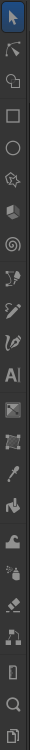
| Eina | Tecla | Per a la làser |
|---|---|---|
| Seleccionador (fletxa) | S | Seleccionar, moure, escalar. Clic de nou sobre l'objecte = girar. |
| Nodes | N | Editar els punts d'un camí. Útil per arreglar formes i lletres. |
| Rectangle | R | Peces, plaques, marcs. Pots arrodonir les cantonades (Rx, Ry). |
| Cercle / El·lipse | E | Forats, posagots, rodes. Ctrl en arrossegar = cercle perfecte. |
| Estel / Polígon | * | Estrelles i polígons regulars (hexàgons, triangles). |
| Espiral | I | Decoració marcada o gravada. |
| Llapis (mà alçada) | P | Dibuix lliure. Després, (Ctrl+L). |
| Ploma (Bézier) | B | Línies rectes i corbes precises clic a clic. Doble clic o Retorn per acabar. |
| Text | T | Noms, rètols. Recorda passar-lo a camí (apartat 7). |
| Constructor de formes | X | Uneix o resta trossos de formes encavalcades fent clic i arrossegant. |
| Mesura | M | Comprovar distàncies i mides reals en mm. |
Mides exactes
Amb el seleccionador (S), escriu a la barra de dalt la posició X, Y i la mida A, H en mm, i prem Retorn. Activa el cadenat per mantenir la proporció.
Atenció a la vora: les caixes X/Y/A/H poden incloure el gruix del traç (“caixa contenidora visual”). Amb traços de la diferència és mínima, però si la línia és gruixuda la mida no serà exacta. Pots canviar-ho a .
Agrupar, duplicar i ordenar
- Ctrl+D duplica (la còpia queda just a sobre: compte amb els talls dobles).
- Ctrl+G agrupa, Maj+Ctrl+G desagrupa.
- Ctrl+clic selecciona un objecte dins d'un grup.
- Alt+clic selecciona l'objecte que hi ha a sota.
Les capes de tall i gravat
Obre el panell (Maj+Ctrl+L).
- i anomena-la TALL.
- Repeteix-ho per a GRAVAT i, si cal, MARCAT.
- Ordena-les com a la imatge: TALL a dalt de tot, perquè les línies de tall es vegin sempre per sobre.
- Per canviar el nom: doble clic sobre el nom de la capa.
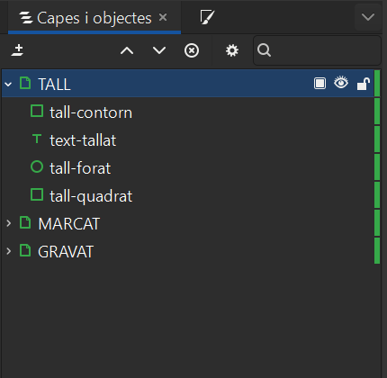
Treballar amb capes
- Capa activa: el que dibuixes va a la capa seleccionada al panell. La barra d'estat ho diu (p. ex. “a capa GRAVAT”).
- Moure un objecte a una altra capa: selecciona'l i fes , o Maj+Re Pàg / Maj+Av Pàg per pujar-lo o baixar-lo d'una capa.
- Ull = amagar/mostrar. Cadenat = bloquejar (no la podràs tocar sense voler).
- Truc: bloqueja la capa TALL mentre treballes el gravat.
LightBurn
LightBurn no fa servir el nom de les capes d'Inkscape: llegeix el color de cada objecte i el posa a la capa de LightBurn amb el color més semblant. Les capes d'Inkscape serveixen per ordenar-te tu.
RDWorks / LaserCut
RDWorks crea una capa per color. Quan exportis a DXF, Inkscape desa també el nom de les capes, però el que compta a la màquina és el color de cada capa a RDWorks.
xTool Creative Space
XCS importa cada objecte amb el seu color. Les capes d'Inkscape t'ajuden a seleccionar ràpid; a XCS triaràs el tipus de processament per objecte o per color.
LaserGRBL
LaserGRBL aplica una sola configuració per fitxer importat. Per això les capes són imprescindibles: exportaràs cada capa com a fitxer separat (apartat 10).
Trotec, Epilog, Glowforge i altres
Aquests sistemes assignen paràmetres per color (taula de colors del controlador o passos de Glowforge). Fes servir colors purs i exactes.
Emplenat i traç: el color de cada operació
Cada forma té dues propietats de color: l'emplenat (l'interior) i el traç (la vora). Les controles al panell (Maj+Ctrl+F).
| Capa | Emplenat | Color del traç | Estil del traç (amplada) |
|---|---|---|---|
| TALL | Cap (X) | ||
| GRAVAT | Cap (X) | – | |
| MARCAT | Cap (X) |
Posar el color exacte
- Selecciona la forma i obre Emplenat i traç.
- Pestanya Emplenat o Color del traç: tria Un únic color (quadrat ple) o Cap (la X).
- A la casella RGBA escriu el codi exacte:
(tall),(gravat),(marcat). Les dues últimes lletresffvolen dir opacitat 100%. - Pestanya Estil del traç: posa l'amplada a i les unitats en mm.
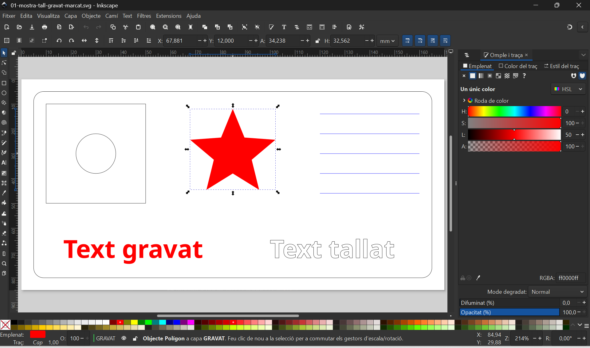
ff0000ff.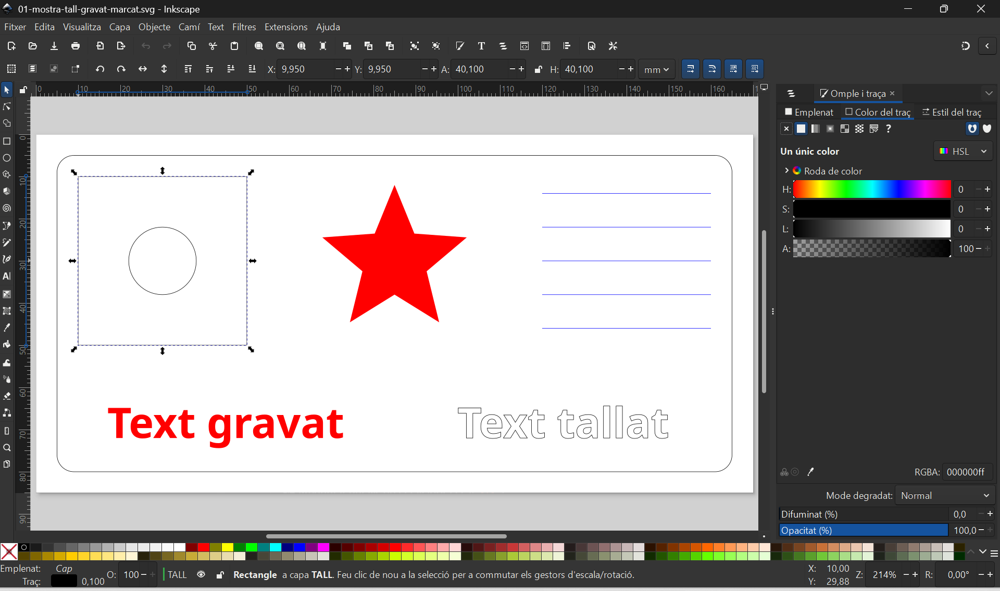
000000ff i sense emplenat.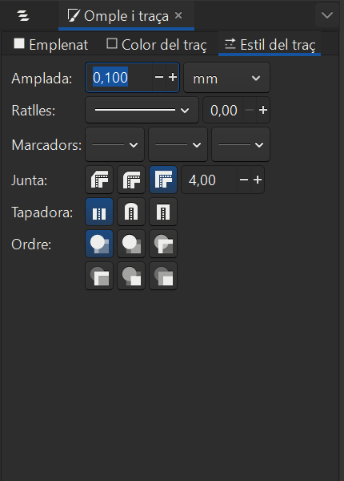
Errors típics
- Un color “gairebé” negre o vermell (p. ex.
#1a1a1a): el programa de la làser el pot posar a una altra capa. Escriu sempre el codi exacte. - Una peça de tall amb emplenat: alguns programes la gravaran sencera. Treu l'emplenat (X).
- Opacitat o difuminat diferents de 100% / 0%.
Truc ràpid: a la paleta de baix, clic posa el color d'emplenat i Maj+clic el del traç. Clic a la X treu l'emplenat i Maj+clic a la X treu el traç. Amb selecciones totes les formes del mateix color d'un cop.
LightBurn
El gruix del traç no importa. LightBurn agafa el color del traç (o de l'emplenat si no té traç). Comprova després de la importació que cada forma ha anat a la capa esperada.
Trotec / Epilog (impressió pel controlador)
Aquests controladors només tallen les línies que són molt fines (habitualment 0,01 mm o “hairline”). Si una línia és més gruixuda, la graven. Posa l'amplada del traç a la Configuració en 0,01 mm.
Figures i formes
Rectangle amb cantonades arrodonides
- Activa la capa TALL. Eina rectangle (R), dibuixa'l.
- A la barra de controls escriu A i H en mm, i Rx/Ry (radi de la cantonada), p. ex. 5 mm.
- Treu l'emplenat i posa el traç de tall.
Forats
Un forat és només un cercle de tall dins la peça. Per a una anella de clauer, un forat de 5–6 mm de diàmetre va bé. Deixa almenys 3 mm de fusta entre el forat i la vora, o es trencarà.
Polígons i estrelles
Amb l'eina * tria a la barra de controls si vols polígon o estel, el nombre de vèrtexs, la proporció dels radis i l'arrodoniment. Un hexàgon és un polígon de 6 vèrtexs.
Combinar formes (operacions booleanes)
Selecciona dues o més formes i fes servir el menú :
| Ordre | Tecla | Resultat |
|---|---|---|
| Unió | Ctrl++ | Una sola forma amb el contorn exterior. Elimina línies interiors que es tallarien. |
| Resta | Ctrl+- | La de dalt fa un “mos” a la de sota. |
| Intersecció | Ctrl+* | Només la part comuna. |
| Exclusió | Ctrl+^ | Tot menys la part comuna. |
| Divisió | Ctrl+/ | Talla la de sota en trossos amb la forma de dalt. |
| Combina / Separa | Ctrl+K / Maj+Ctrl+K | Ajunta camins en un sol objecte (o el contrari) sense canviar-ne la forma. |
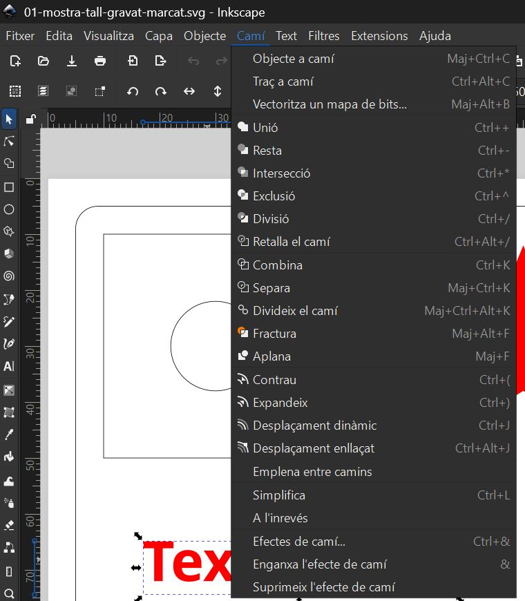
Exemple: per fer un núvol, dibuixa uns quants cercles encavalcats, selecciona'ls tots i fes Unió. Si no ho fas, la làser tallaria tots els cercles sencers i el núvol quedaria esmicolat.
Alinear i distribuir
(Maj+Ctrl+A). Tria Relatiu a: Pàgina, Primer seleccionat, Objecte més gran... i prem el botó d'alineació.
Ús típic: centrar el text sobre la placa (relatiu a Objecte més gran, centrar horitzontal i vertical).
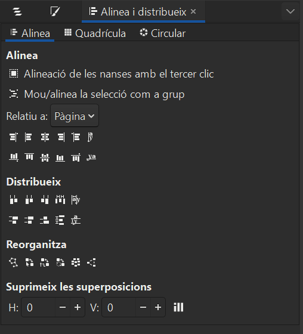
Textos
- Eina text (T), clic al llenç i escriu.
- A la barra de dalt tria el tipus de lletra, l'estil (Bold grava millor) i la mida.
- Torna al seleccionador (S) i ajusta'n la mida amb les caselles A/H.
- Posa el color de gravat a l'emplenat i treu el traç.
- Converteix-lo en camí: (Maj+Ctrl+C).
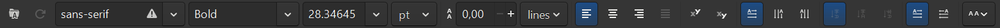
Per què passar el text a camí? Si l'ordinador de la talladora no té instal·lat el mateix tipus de lletra, el canviarà per un altre o no el mostrarà. Un cop és camí, ja són formes i surten igual a tot arreu. Desa abans una còpia amb el text editable, perquè després ja no podràs canviar les lletres.
Text gravat, marcat o tallat
Gravat
Emplenat de gravat. És el més habitual i el que es llegeix millor.
Marcat
Només el contorn de les lletres amb traç de marcat. Molt més ràpid que gravar, ideal per lletres grans.
Tallat
Les lletres es buiden. Compte: l'interior de la o, a, e, d, p... caurà.
Per tallar lletres sense perdre els “ulls”, fes servir una font stencil (plantilla), o afegeix ponts: dibuixa petits rectangles que creuin l'ull de la lletra i fes Resta. Per tallar un nom que es mantingui d'una peça, les lletres s'han de tocar: redueix l'espaiat (barra de text, espaiat entre lletres) i, al final, fes Unió.
Batxillerat Text sobre un camí: selecciona el text i un cercle i fes . Molt útil per a rètols rodons i posagots.
Línies, contorns i imatges
Línies gruixudes per gravar
Una línia amb traç només es pot tallar o marcar (el làser la segueix). Si vols una línia gruixuda gravada, primer converteix el traç en forma: (Ctrl+Alt+C). Ara la línia és una forma plena: posa-hi l'emplenat de gravat.
Contorn al voltant d'un dibuix
Per fer una peça que segueixi la silueta d'un dibuix (adhesius, imants, figures): duplica el dibuix (Ctrl+D), fes Unió, i després (Ctrl+)) unes quantes vegades. Posa aquesta forma a la capa TALL amb el traç de tall. Per controlar exactament quants mil·límetres creix, ves a i canvia el valor d'Insereix/Expandeix.
Logotips i dibuixos d'una imatge
- (Ctrl+I) la imatge (millor en blanc i negre, amb contrast).
- Selecciona-la i obre (Maj+Alt+B).
- Mode Tall de brillantor. Ajusta el Llindar mirant la vista prèvia i prem Aplica.
- Esborra la imatge original (el vector queda just a sobre).
- Posa el resultat a la capa GRAVAT amb l'emplenat de gravat.
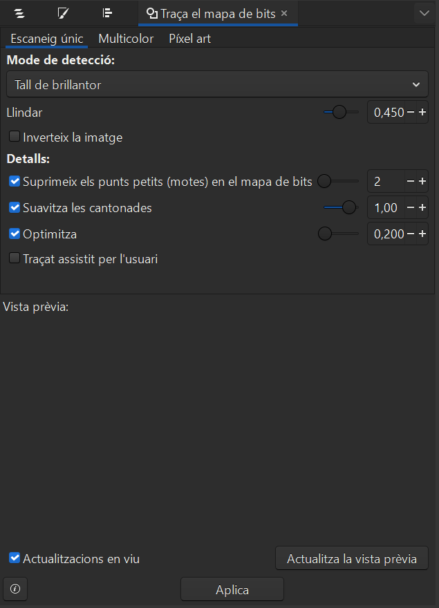
Fotografies: per gravar una foto amb grisos no cal vectoritzar. Importa-la directament al programa de la talladora i fes-la servir com a imatge (mode imatge / dithering). Inkscape només cal per col·locar-la i tallar-ne el marc.
Comprovacions abans d'enviar
Fes aquesta llista cada vegada. Les caselles es queden marcades només en aquest navegador.
Truc per veure només les línies: (Ctrl+5 alterna els modes). Així veus les línies duplicades i les formes amagades.
Desar i enviar a la talladora
Desa sempre el fitxer de treball com a SVG de l'Inkscape (conserva capes i noms). Per a la làser, fes una còpia amb (Maj+Ctrl+Alt+S) i tria el format que demana el teu programa:
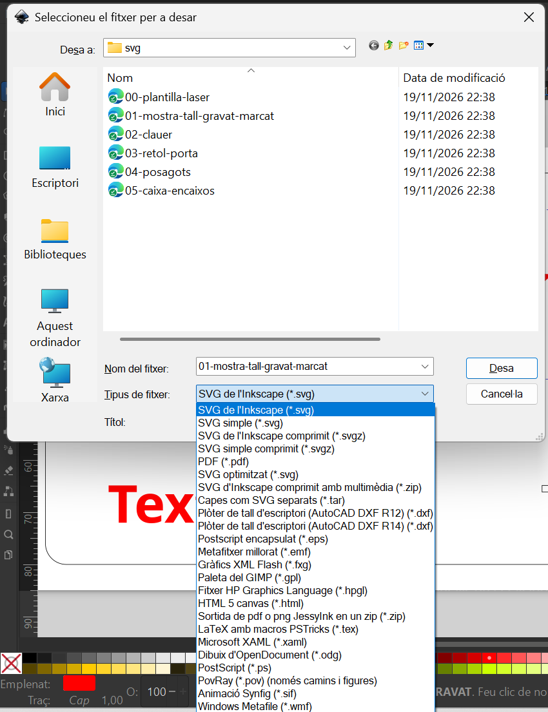
LightBurn
- Desa una còpia com a SVG simple (*.svg).
- A LightBurn: File ▸ Import (Ctrl+I) o arrossega el fitxer.
- Al panell Cuts / Layers apareix una capa per color. Configura-les: color de tall en mode Line, color de gravat en mode Fill, color de marcat en mode Line amb poca potència.
- Ordena les capes amb les fletxes perquè el tall quedi l'últim.
- Amb Window ▸ Preview (Alt+P) comprova el recorregut i el temps.
- Desa la configuració a la Material Library per reutilitzar-la.
RDWorks / LaserCut (controladora Ruida)
- RDWorks no importa bé l'SVG. Desa una còpia com a Plòter de tall d'escriptori (AutoCAD DXF R14) (*.dxf), amb la unitat base en mm.
- A RDWorks: File ▸ Import el DXF. Comprova que la mida sigui la correcta.
- Cada color és una capa. Posa la capa de tall en mode Cut, la de gravat en mode Scan (escombratge) i la de marcat en mode Cut amb poca potència.
- El DXF no guarda emplenats: RDWorks omple en mode Scan les formes tancades de la capa de gravat.
- Si els colors no surten bé, selecciona les peces a RDWorks i fes clic al color de capa correcte de la barra de colors.
- Ordena les capes perquè el tall vagi l'últim i fes Download o Start.
xTool Creative Space (XCS)
- Desa una còpia com a SVG simple (*.svg).
- A XCS, importa o arrossega el fitxer. Si queda agrupat, desagrupa'l.
- Selecciona les peces de tall i tria Tallar (Cut). El gravat, Gravar (Engrave, ple). El marcat, Marcar (Score).
- Tria el material de la llista (p. ex. contraxapat 3 mm) per tenir valors de partida, i ajusta'ls.
- XCS processa per defecte gravat i marcat abans que el tall; comprova-ho a la vista prèvia.
LaserGRBL (làsers de díode)
- Desa una còpia com a Capes com SVG separats (*.tar), o amaga capes i desa un SVG simple per a cada capa (
nom-gravat.svg,nom-tall.svg). - A LaserGRBL: File ▸ Open el fitxer de gravat i configura'l (potència i velocitat).
- Després File ▸ Append el fitxer de tall i configura'l amb els seus valors. Així el tall s'executa al final.
- LaserGRBL fa servir el contorn: per gravar àrees plenes, fes servir el mode d'emplenat de l'SVG si la teva versió el té, o exporta el gravat com a PNG i importa'l com a imatge.
Trotec, Epilog, Glowforge i altres
- Trotec / Epilog: s'envia imprimint () o des del programa propi (JobControl, Ruby, Epilog Dashboard). Línies de tall a 0,01 mm i colors RGB exactes, que han de coincidir amb la taula de colors del controlador. També pots desar com a PDF.
- Glowforge: puja l'SVG simple a l'aplicació web. Crea un pas per color i tries Cut / Score / Engrave.
- Altres: si accepta SVG, desa SVG simple. Si no, prova PDF o DXF R14.
Paràmetres de la màquina
Aquests són els valors que tens guardats a la Configuració per a contraxapat 3 mm. Són un punt de partida: cada màquina és diferent.
| Operació | Color | Mode | Potència | Velocitat | Passades |
|---|
Fes sempre una prova en un tros de la mateixa planxa: un quadrat de 10 mm tallat i un altre gravat. Si el tall no travessa, baixa la velocitat o afegeix una passada abans que pujar molt la potència. La potència alta crema més les vores.
LightBurn
A Laser Tools ▸ Material Test pots generar una quadrícula de proves amb diferents potències i velocitats.
Exercicis pràctics
Descarrega el fitxer d'inici de cada exercici: ja té les capes i els teus colors de la Configuració. Obre'l amb Inkscape ().
Si el botó de descàrrega no funciona en aquest visor, fes servir Copia el codi, enganxa'l al Bloc de notes i desa'l amb extensió .svg. També pots enganxar-lo directament a Inkscape amb Ctrl+V.
Nivell avançat
El kerf: el gruix del tall
El làser crema una franja de material d'unes 0,1–0,2 mm (el kerf). La peça surt una mica més petita que el dibuix i els forats una mica més grans. Per a decoració no importa; per a encaixos sí.
- Mesurar el kerf: talla un quadrat de 20 mm, mesura'l amb el peu de rei. Kerf = 20 − mida mesurada.
- Compensar: engrandeix les peces exteriors kerf/2 per cada costat. A Inkscape: o amb el pas configurat a kerf/2 (Preferències ▸ Comportament ▸ Passos). Molts programes de làser també tenen opció Kerf offset.
Caixes amb encaixos (dits)
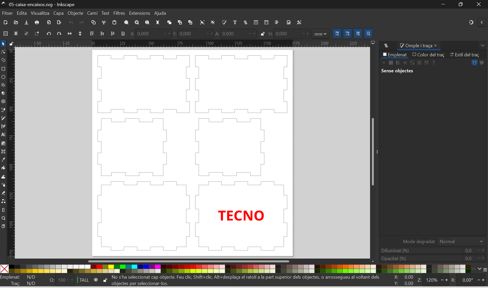
- La profunditat de cada dit = gruix real del material (mesura'l: el “3 mm” sovint fa 2,8–3,2 mm).
- Un dit d'una cara entra al forat de l'altra: els patrons han de ser complementaris.
- Generadors: l'extensió (Foldable Box) per a caixes de cartró amb plecs; per a caixes de fusta, la web boxes.py genera SVG amb encaixos i kerf.
- Engranatges: .
Repetir motius: clons en mosaic
Per fer un patró (posagots, celosies), selecciona el motiu i fes . Tria la simetria, files i columnes. Al final selecciona-ho tot i fes i Unió, perquè la làser rebi formes normals.
Plecs de fusta (living hinge)
Moltes línies de tall paral·leles i alternades fan que el contraxapat es pugui doblegar. Dibuixa una línia, duplica-la amb o amb clons en mosaic, i deixa uns 2 mm entre línies.
Altres eines útils
- Editor XML (Maj+Ctrl+X): veure i corregir els colors exactes de cada objecte.
- (Ctrl+L): menys nodes, moviment més suau de la màquina.
- : talla línies amb una altra forma (p. ex. per fer ponts).
- Guies i ajust (% activa/desactiva l'ajust): per encaixar peces exactament una al costat de l'altra.
- Línies compartides: quan dues peces es toquen, pots esborrar una de les dues línies comunes. Estalvies temps i material, però compte amb la línia duplicada.
Seguretat al taller
- Mai deixis la talladora sola mentre treballa. Hi pot haver flama.
- L'extractor de fums i l'aire (air assist) han d'estar engegats.
- No obris la tapa fins que la màquina hagi acabat i el fum hagi marxat.
- Materials prohibits: PVC, vinil, polipell, pell artificial, policarbonat, fibra de vidre, materials que no sàpigues què són. Desprenen gasos tòxics o corrosius.
- Fes servir només materials autoritzats pel professorat (contraxapat, DM, cartró, metacrilat...).
- Has de saber on és l'aturada d'emergència i l'extintor.
Dreceres de teclat
Glossari
- Camí (path)
- Forma feta de nodes i segments. És el que entén la làser.
- Node
- Punt d'un camí. L'eina Nodes (N) els mou.
- Emplenat
- Color de l'interior d'una forma. A la làser = gravat.
- Traç
- Línia de la vora d'una forma. A la làser = tall o marcat.
- Capa
- Carpeta transparent on poses objectes per ordenar el dibuix.
- Kerf
- Amplada del material que crema el làser en tallar.
- Gravat (raster / escombratge)
- El làser va d'un costat a l'altre línia a línia per omplir una àrea.
- Vectorial
- Imatge descrita amb formes matemàtiques (SVG, DXF, PDF).
- Mapa de bits
- Imatge feta de píxels (PNG, JPG).
- SVG simple
- SVG sense la informació extra d'Inkscape. El més compatible.